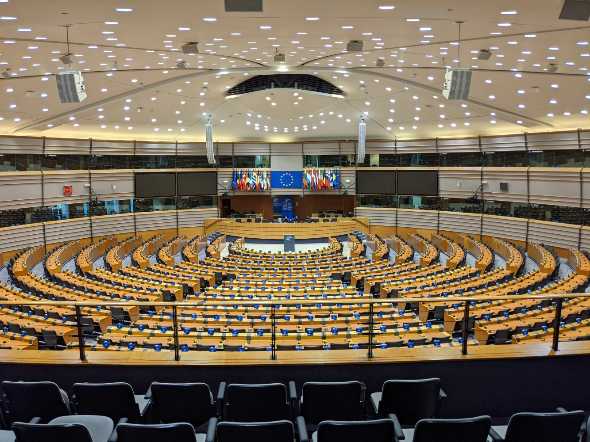
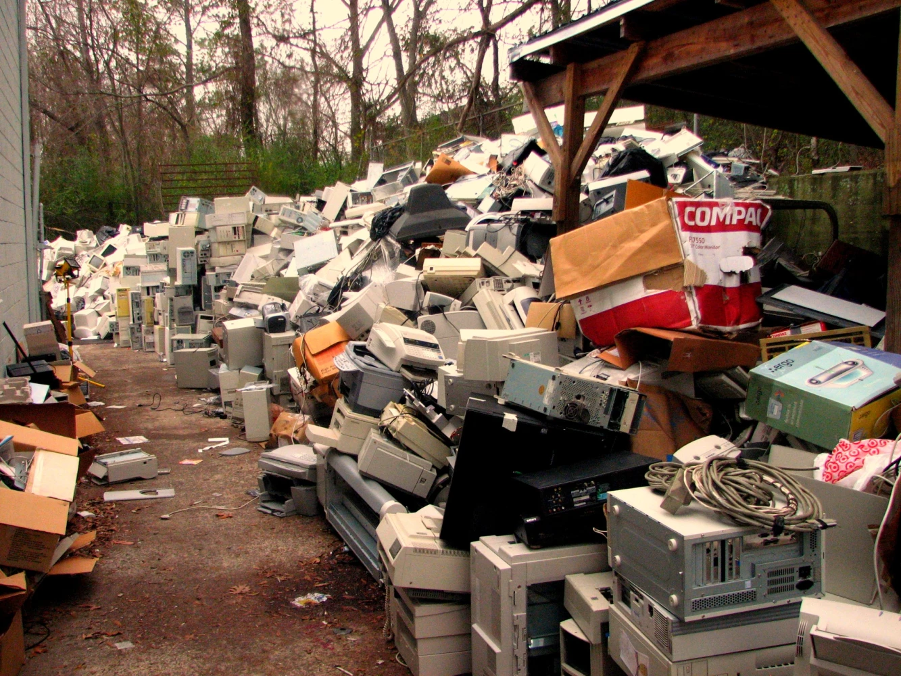
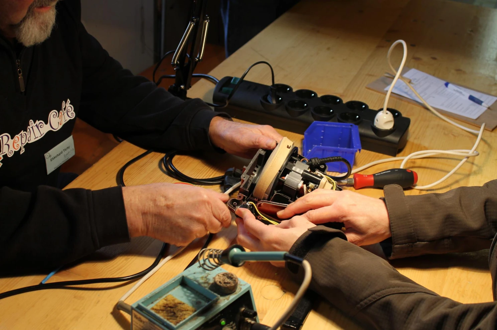
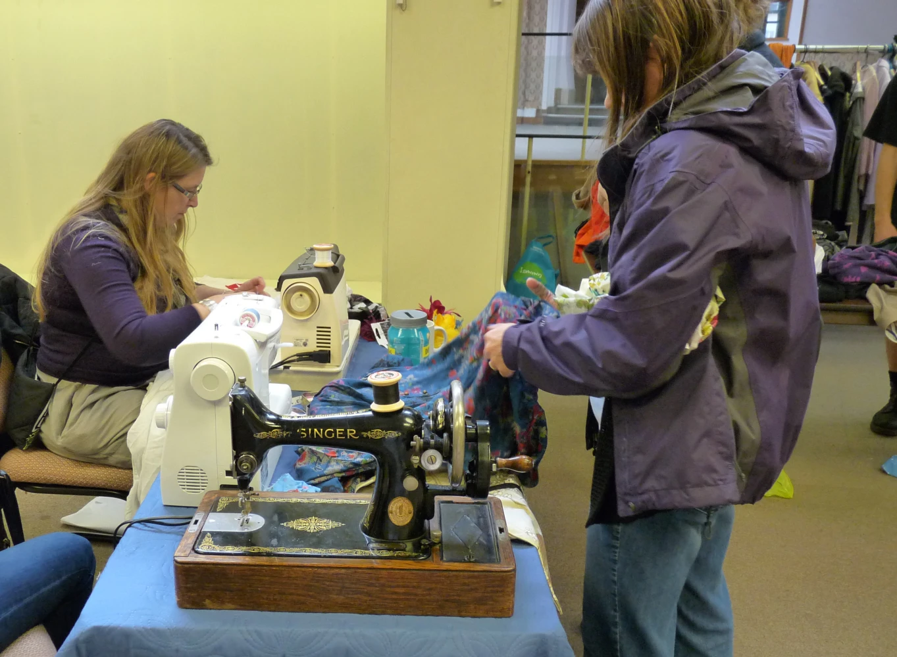

Full article · LinkedIn
The EU’s Greenwashing Crackdown Has a Second Target You Haven't Heard Of
An examination of EU greenwashing rules and their less obvious focus on durability, repairability, software support, and the practical barriers to keeping products in use.

A vacuum cleaner can come in recycled packaging and still be a terrible thing to own.
Imagine that a small plastic clip breaks. The motor works. The rest of the machine works. But you cannot buy the clip separately, opening the housing is difficult, and the repair quote makes a replacement look sensible.
The packaging claim might be perfectly true. You are still about to throw away a functioning motor because one small part failed.
That is where the EU’s latest greenwashing rules become more interesting than a list of buzzwords companies need to stop using.
We often discuss sustainability at the moment of purchase: the material, the label, the promise on the box, etc. The years that follow deserve just as much attention.
A product’s environmental story continues long after the sale.
What actually changed on September 27

The relevant law is Directive (EU) 2024/825, usually called the Empowering Consumers for the Green Transition directive. It was adopted on February 28, 2024. Member States had until March 27, 2026 to transpose it, and the measures were due to apply from September 27, 2026. The Commission’s implementation Q&A was updated on September 22.
So this is a new application date for a law adopted more than two years ago. The Commission’s current overview sets out that timeline.
Its consumer-protection framework covers commercial practices involving EU consumers; national implementation and enforcement matter. It should also be distinguished from the separately proposed Green Claims Directive.
The new restrictions include generic environmental claims without relevant, recognized excellent environmental performance; sustainability labels lacking a qualifying certification scheme or a public-authority basis; and whole-product claims supported by only one aspect. They also prohibit claims that offsets give a product a neutral, reduced or positive greenhouse-gas impact.
Those are substantial changes. A vague impression of environmental virtue can affect what people buy, and businesses doing the harder work should not have to compete with an invented badge.
But read beyond the environmental claims and another subject keeps appearing: durability, repair, software updates and premature replacement.
The law connects the information used to sell a product with what happens while someone owns it. That connection is the part I think deserves more attention.
The less obvious target: products that stop being useful

A product can improve one environmental attribute while remaining expensive, difficult or impractical to keep in use.
Recycled material matters. So do efficient operation and responsible production. Yet a benefit in one part of the product’s life cannot answer every question about the rest of it.
The Global E-waste Monitor 2024, produced by ITU and UNITAR with Fondation Carmignac, estimated that the world generated 62 million tonnes of electronic waste in 2022 alone. Just 22.3% of that mass was documented as formally collected and recycled in an environmentally sound way.
Those are historical global figures. They show the scale of the waste stream into which today’s purchasing and replacement decisions feed.
Keeping a useful product working can delay the demand for another one. That is why a replaceable battery, continued software support or an available spare part can have environmental significance even when none of them looks especially impressive on a shop shelf.
The consumer directive adds information duties for applicable repairability scores. When no such score applies, it requires information about parts, repair instructions and restrictions if the producer has supplied it to the seller. It also addresses false repairability and durability representations. The conditions in the legislation matter.
The new GARAN label identifies qualifying voluntary producer guarantees: free to the consumer, covering the whole product, and lasting longer than two years. It does not require every product to come with that extended guarantee. Nor does a guarantee establish that an item has the lowest overall environmental impact.
Still, a producer taking responsibility for durability is a useful signal. It gives the buyer something more concrete than a reassuring color scheme.
The environmental case also needs care. The European Environment Agency’s lifecycle analysis shows that the balance between manufacturing impacts and energy used during operation differs across products. Keeping every old appliance forever is no universal rule. The question is whether continued use, repair or replacement makes sense for that particular product.
A label can explain repair. Someone still has to do it.

Picture someone whose phone breaks during the working week. They need it for their job, banking and getting around. A high repairability score does not settle the decision if the nearest repairer is far away, the part takes weeks to arrive or the price approaches the cost of another phone.
That is a practical constraint. It should be treated as one.
The Commission’s 2023 repair impact assessment identifies repair prices relative to replacement prices as a major factor. It also discusses inconvenience, delays and difficulty finding services. The evidence predates the latest application dates, but it helps explain why information alone is an incomplete solution.
A repairability score becomes useful when repair is an option someone can afford to take.
This is also why the wider policy context matters.
Separate EU smartphone and tablet rules have applied to covered devices placed on the market since June 20, 2025. They bring repairability ratings and requirements concerning batteries, spare parts and software support. For covered smartphones and slate tablets, the battery standard includes at least 800 charging cycles with 80% of initial capacity remaining.
The separate repair-of-goods directive had a national transposition and application deadline of July 31, 2026. Its manufacturer repair obligation applies to listed product categories subject to EU repairability requirements, with repairs at a reasonable price and within a reasonable time. It is not a promise of free repair for every damaged item.
Together, these measures work on different parts of the same problem: what buyers know, how products are designed, and what happens when they break.
A seller can communicate a repair score. A manufacturer can make a part available. A repair business needs the tools and skills to fit it. The person who owns the product needs a service they can reach and a bill they can manage.
The environmental benefit depends on that whole sequence working.
The test comes after the purchase

I would judge these rules by what happens to the product after the customer leaves the shop.
Are people keeping goods in active use for longer? Are repair costs and waiting times becoming manageable? Do repaired and reused products replace purchases of new ones? Are fewer materials being used and fewer useful components discarded?
Counting corrected claims will help assess enforcement. Counting products that stay useful will help assess the environmental outcome.
The EEA’s work on product lifespans makes two points that complicate easy success stories. Data on lifespans remain scarce, and extending a product’s life does not necessarily displace a new purchase one for one. Spending the money saved on another product can also reduce the expected benefit.
We therefore need evidence about use and replacement, rather than assuming that a clearer label automatically reduces material demand.
There is a fairness question here as well. If the durable option costs more upfront, and repair involves time off work or long journeys, environmental policy cannot assume that everyone has the same freedom to choose it. Affordability and access belong in the evaluation.
The EU’s new rules give consumers stronger tools for questioning environmental promises and understanding product longevity. That is a useful foundation.
Success means fewer avoidable replacements. That would look like a working vacuum cleaner with a new clip, a phone with a replaced battery, or a repaired appliance that stays in the home.
A credible environmental claim helps someone decide what to buy. A workable repair system helps them decide whether they need to buy anything at all.
About this project
See the assignment, process, and Paul’s contribution.
Paul selected the editorial angle, researched the legislation and environmental evidence, and wrote and published the article independently. The complete October 8, 2026 LinkedIn text, images, captions, emphasis and source links are preserved on the reading page.
Related work
Continue through the subject.

Why ‘Backed by Science’ Is One of the Weakest Claims a Company Can Make
A research-led explanation of why scientific claims need a measured outcome, comparison, setting, and boundary—not just a study or a reassuring phrase.

I Reviewed 20 Environmental-Tech Websites. Here’s What They Got Wrong About Their Science.
A review of 20 environmental technology websites examining how PFAS treatment, water reuse, carbon accounting, and monitoring claims communicate their evidence and limits.

Carbon Offsets Are Dead. Long Live Carbon Insetting.
Why carbon offsets have lost credibility—and why investing inside a company’s own value chain may be more accountable.